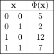
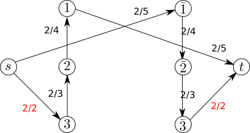
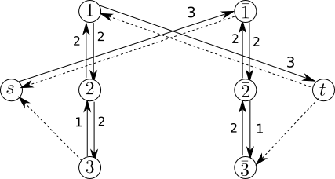

Quadratic Pseudo-Boolean Optimization
An introduction — submodularity & graph cuts, non-submodularity & roof duality.
Graph-based algorithms have been used for decades across many optimization applications, with very good results. First used empirically in image processing, graph-based methods there turned out to be a reduction of pseudo-Boolean function optimization in the binary case. Many of the field's properties and algorithms have in turn improved the state of the art in image processing.
Pseudo-Boolean function
A pseudo-Boolean function has the following form:
where the are Boolean variables and the are reals. By introducing the complement , it can be rewritten with only positive coefficients — the posiform, the form that is generally minimized.
Optimizing a sub-modular function
A special case is when the function is sub-modular (closely related to convexity in the continuous case): the global minimum can then be reached in polynomial time. Every pseudo-Boolean function reduces to a quadratic one (at most two variables per term), and when the quadratic form is sub-modular, the global minimum is a graph cut.
For example, minimizing the sub-modular function is the same as finding the minimum cut of the graph:


Optimizing a non-sub-modular function
When a pseudo-Boolean function is not sub-modular (or cannot be identified as such), the global minimum is no longer reachable in polynomial time. However, a subset of labels guaranteed to belong to the global minimum still can be.
A quadratic pseudo-Boolean function can be rewritten with a largest possible constant term; that maximal form is the roof duality. Once it is reached, the assignment making the linear terms vanish is part of the global minimum, and a max-flow computation yields it.
The function can be transformed, with the same truth table, by extracting the constant term : . This is done with a max-flow approach:


References
Endre Boros and Peter L. Hammer. Pseudo-Boolean optimization. Discrete Applied Mathematics 123 (1–3), 155–225, 2002. doi:10.1016/S0166-218X(01)00341-9